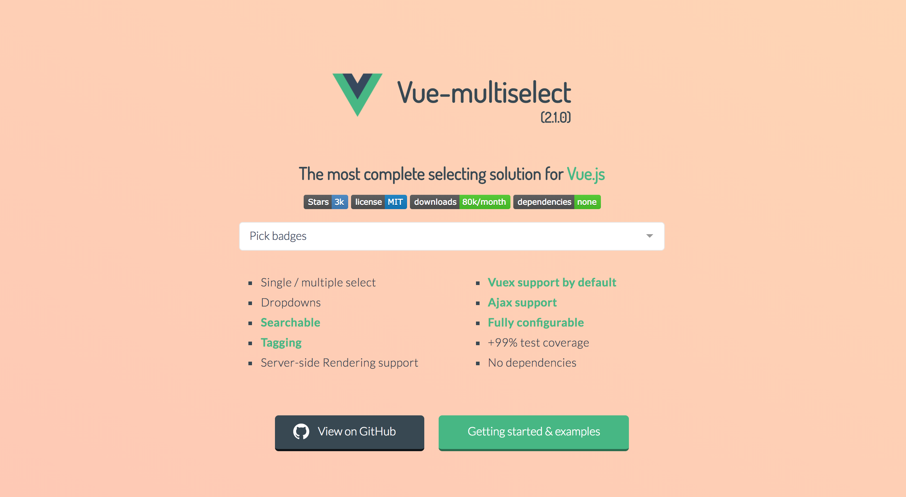

vue-multiselect
基于Vue下拉复选框


vue-multiselect 


Probably the most complete selecting solution for Vue.js 2.0, without jQuery.

Features & characteristics:
- NO dependencies
- Single select
- Multiple select
- Tagging
- Dropdowns
- Filtering
- Search with suggestions
- Logic split into mixins
- Basic component and support for custom components
- V-model support
- Vuex support
- Async options support
- > 95% test coverage
- Fully configurable (see props list below)
Breaking changes:
- Instead of Vue.partial for custom option templates you can use a custom render function.
- The
:keyprops has changed to:track-by, due to conflicts with Vue 2.0. - Support for
v-model @updatehas changed to@inputto also work with v-model:selectedhas changed to:valuefor the same reason- Browserify users: if you wish to import
.vuefiles, please addvueifytransform.
Install & basic usage
npm install vue-multiselect
<template>
<div>
<multiselect
v-model="selected"
:options="options">
</multiselect>
</div>
</template>
<script>
import Multiselect from 'vue-multiselect'
export default {
components: { Multiselect },
data () {
return {
selected: null,
options: ['list', 'of', 'options']
}
}
}
</script>
<style src="vue-multiselect/dist/vue-multiselect.min.css"></style>
JSFiddle
Example JSFiddle – Use this for issue reproduction.
Examples
in jade-lang/pug-lang
Single select / dropdown
multiselect(
:value="value",
:options="source",
:searchable="false",
:close-on-select="false",
:allow-empty="false",
@input="updateSelected",
label="name",
placeholder="Select one",
track-by="name"
)
Single select with search
multiselect(
v-model="value",
:options="source",
:close-on-select="true",
:clear-on-select="false",
placeholder="Select one",
label="name",
track-by="name"
)
Multiple select with search
multiselect(
v-model="multiValue",
:options="source",
:multiple="true",
:close-on-select="true",
placeholder="Pick some",
label="name",
track-by="name"
)
Tagging
with @tag event
multiselect(
v-model="taggingSelected",
:options="taggingOptions",
:multiple="true",
:taggable="true",
@tag="addTag",
tag-placeholder="Add this as new tag",
placeholder="Type to search or add tag",
label="name",
track-by="code"
)
addTag (newTag) {
const tag = {
name: newTag,
code: newTag.substring(0, 2) + Math.floor((Math.random() * 10000000))
}
this.taggingOptions.push(tag)
this.taggingSelected.push(tag)
},
Asynchronous dropdown
multiselect(
v-model="selectedCountries",
:options="countries",
:multiple="multiple",
:searchable="searchable",
@search-change="asyncFind",
placeholder="Type to search",
label="name"
track-by="code"
)
span(slot="noResult").
Oops! No elements found. Consider changing the search query.
methods: {
asyncFind (query) {
this.countries = findService(query)
}
}
Contributing
# serve with hot reload at localhost:8080
npm run dev
# distribution build with minification
npm run bundle
# build the documentation into docs
npm run docs
# run unit tests
npm run test
# run unit tests watch
npm run unit
For detailed explanation on how things work, checkout the guide and docs for vue-loader.